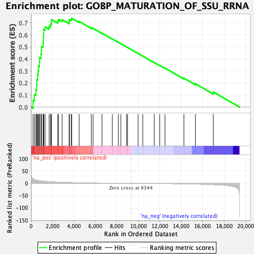
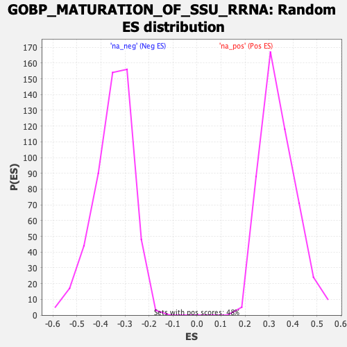

| | | Dataset | DE_genes |
| Phenotype | NoPhenotypeAvailable |
| Upregulated in class | na_pos |
| GeneSet | GOBP_MATURATION_OF_SSU_RRNA |
| Enrichment Score (ES) | 0.73820156 |
| Normalized Enrichment Score (NES) | 2.1749694 |
| Nominal p-value | 0.0 |
| FDR q-value | 0.0 |
| FWER p-Value | 0.0 |
Table: GSEA Results Summary

Fig 1: Enrichment plot: GOBP_MATURATION_OF_SSU_RRNA
Profile of the Running ES Score & Positions of GeneSet Members on the Rank Ordered List
| SYMBOL | RANK IN GENE LIST | RANK METRIC SCORE | RUNNING ES | CORE ENRICHMENT | | 1 | RPP40 | 190 | 18.801 | 0.0558 | Yes |
| 2 | RIOK1 | 314 | 15.632 | 0.1041 | Yes |
| 3 | RRP36 | 454 | 13.515 | 0.1441 | Yes |
| 4 | BYSL | 531 | 12.690 | 0.1844 | Yes |
| 5 | WDR46 | 546 | 12.560 | 0.2276 | Yes |
| 6 | PWP2 | 618 | 11.950 | 0.2656 | Yes |
| 7 | UTP6 | 666 | 11.568 | 0.3036 | Yes |
| 8 | DHX37 | 700 | 11.326 | 0.3414 | Yes |
| 9 | SRFBP1 | 790 | 10.675 | 0.3741 | Yes |
| 10 | UTP4 | 797 | 10.650 | 0.4109 | Yes |
| 11 | WDR3 | 933 | 9.816 | 0.4382 | Yes |
| 12 | TSR1 | 970 | 9.678 | 0.4702 | Yes |
| 13 | RRS1 | 972 | 9.656 | 0.5038 | Yes |
| 14 | KRI1 | 1130 | 8.818 | 0.5265 | Yes |
| 15 | NGDN | 1151 | 8.730 | 0.5559 | Yes |
| 16 | DDX52 | 1152 | 8.729 | 0.5864 | Yes |
| 17 | DCAF13 | 1179 | 8.615 | 0.6151 | Yes |
| 18 | UTP20 | 1183 | 8.596 | 0.6450 | Yes |
| 19 | NOL11 | 1315 | 8.057 | 0.6664 | Yes |
| 20 | HEATR1 | 1696 | 6.859 | 0.6707 | Yes |
| 21 | NAT10 | 1816 | 6.533 | 0.6874 | Yes |
| 22 | TSR2 | 1899 | 6.313 | 0.7052 | Yes |
| 23 | NOP9 | 1915 | 6.277 | 0.7263 | Yes |
| 24 | ABT1 | 2503 | 5.071 | 0.7137 | Yes |
| 25 | NOP14 | 2564 | 4.956 | 0.7279 | Yes |
| 26 | RIOK2 | 2901 | 4.365 | 0.7258 | Yes |
| 27 | BMS1 | 3560 | 3.457 | 0.7040 | Yes |
| 28 | UTP25 | 3569 | 3.443 | 0.7156 | Yes |
| 29 | MRPS11 | 3589 | 3.417 | 0.7265 | Yes |
| 30 | LSM6 | 3756 | 3.226 | 0.7292 | Yes |
| 31 | GTF2H5 | 3798 | 3.175 | 0.7382 | Yes |
| 32 | ERCC2 | 4491 | 2.394 | 0.7109 | No |
| 33 | UTP3 | 5622 | 1.457 | 0.6577 | No |
| 34 | RCL1 | 5785 | 1.358 | 0.6541 | No |
| 35 | SNU13 | 6619 | 0.872 | 0.6142 | No |
| 36 | UTP23 | 7582 | 0.458 | 0.5661 | No |
| 37 | HELB | 8146 | 0.276 | 0.5381 | No |
| 38 | NOB1 | 8379 | 0.208 | 0.5268 | No |
| 39 | RPS19 | 8913 | 0.084 | 0.4996 | No |
| 40 | NOL10 | 9002 | 0.063 | 0.4953 | No |
| 41 | RPS21 | 9983 | -0.123 | 0.4452 | No |
| 42 | RPS14 | 10422 | -0.231 | 0.4234 | No |
| 43 | RPS28 | 11490 | -0.531 | 0.3703 | No |
| 44 | RPS8 | 12004 | -0.695 | 0.3462 | No |
| 45 | TBL3 | 12493 | -0.892 | 0.3242 | No |
| 46 | RPS16 | 14255 | -1.854 | 0.2398 | No |
| 47 | TSR3 | 15325 | -2.753 | 0.1943 | No |
| 48 | RIOK3 | 16996 | -5.082 | 0.1259 | No |
Table: GSEA details [plain text format]

Fig 2: GOBP_MATURATION_OF_SSU_RRNA: Random ES distribution
Gene set null distribution of ES for GOBP_MATURATION_OF_SSU_RRNA